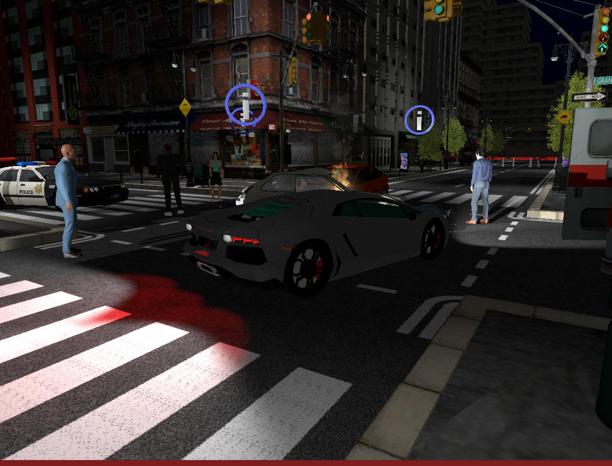
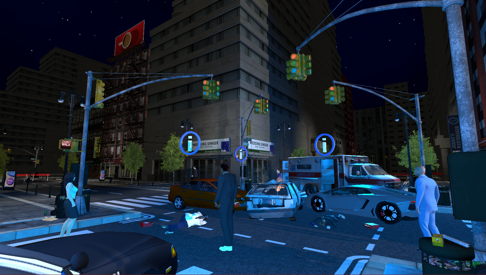
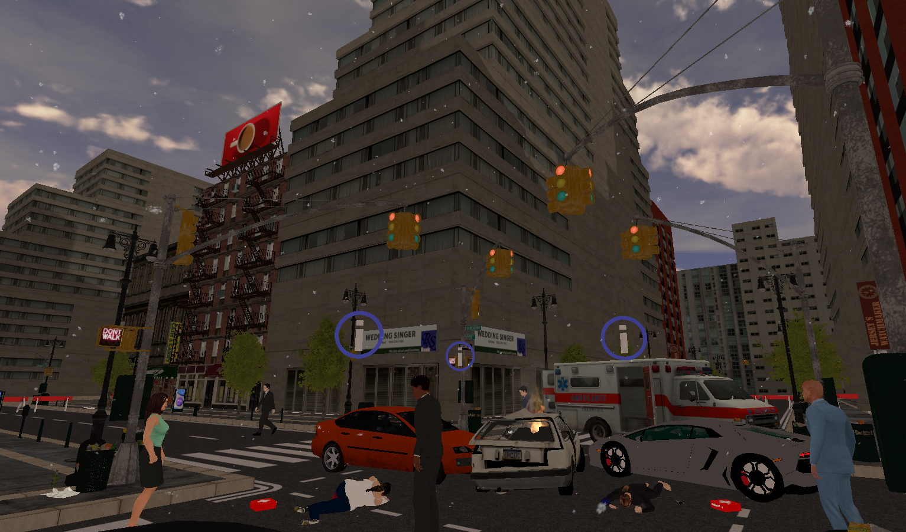
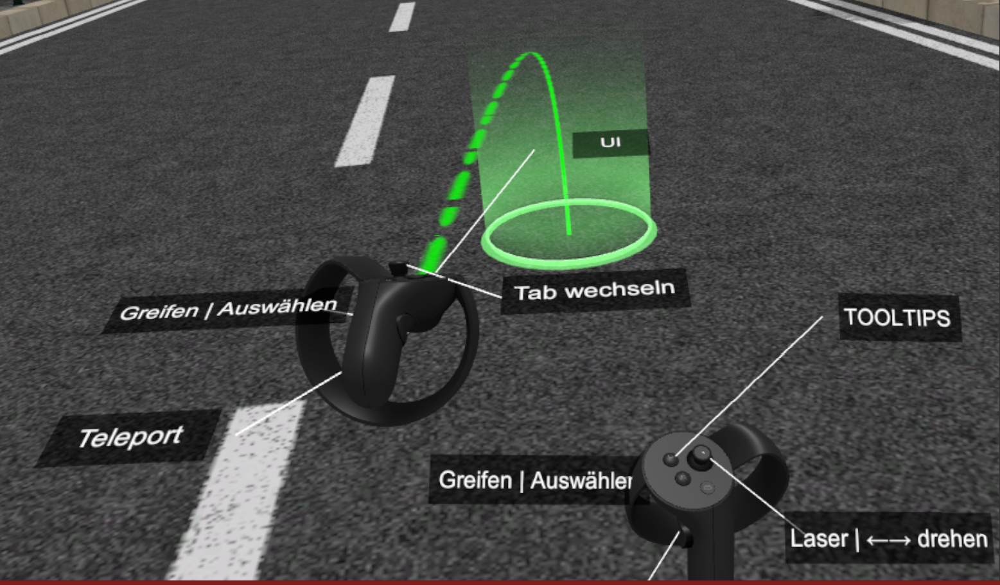
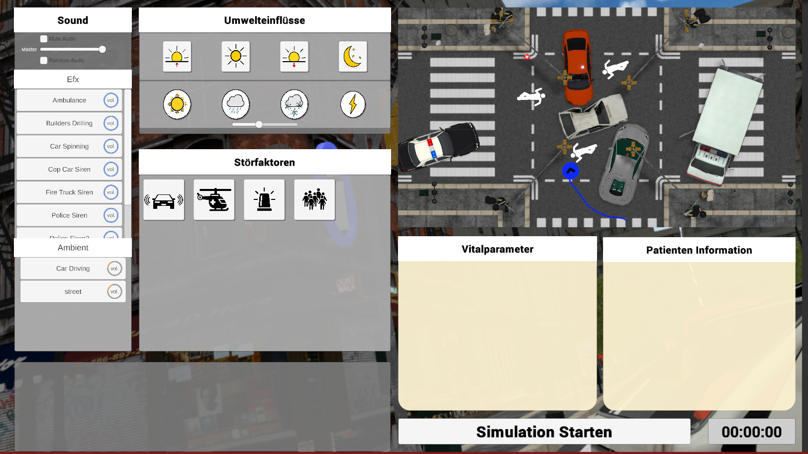
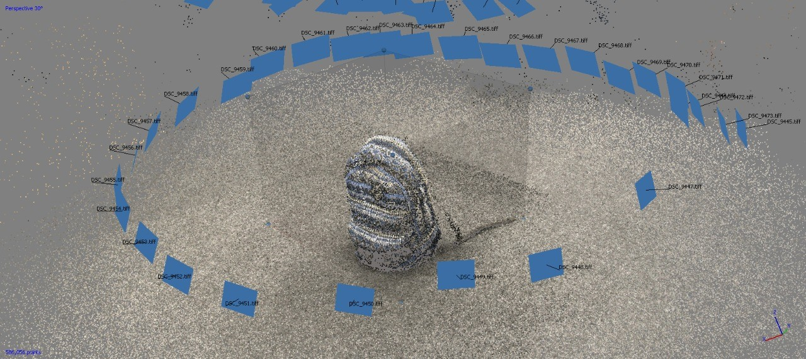
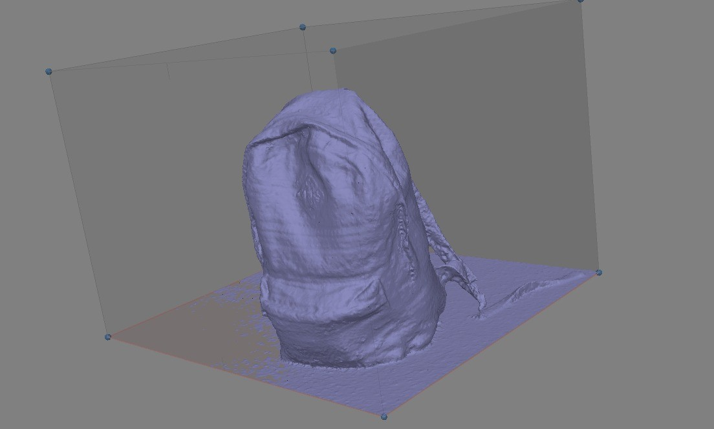
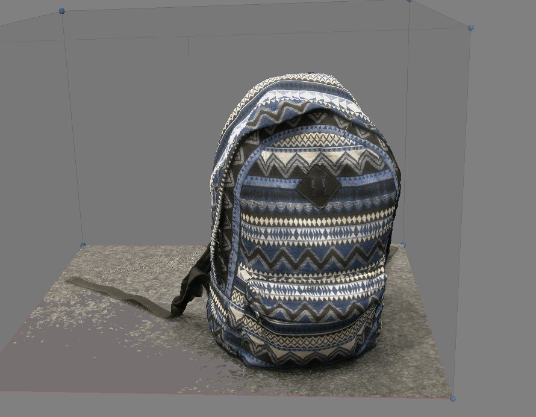

MANV VR

In diesem Praktium war meine Aufgabe zusammen mit zwei anderen Praktikanten das Konzept einer bereits vorhandenen Android & IOS App in VR umzusetzen. Das Ziel der Anwendung war es MANV (Massenanfall von Verletzten) Szenarien für Trainingszwecke zu Simulieren. Mehreren Teilnehmern (Ärzte, Ersthelfen, etc..) sollte es möglich sein zusammen in einer Szene mit den Patienten zu interagieren und diese zu behandeln. Einem Game Master ist es möglich Unwelteinflüsse und Störfaktoren zu bestimmen und das Geschehen bzw. das Vorgehen der einzelnen Teilnehmer zu beobachten und zu bewerten. Das VR-Projekt wurde von Grund auf von uns konzipiert und umgesetzt. Für die VR-Interaktion und Fortbewegung verwendeten wir das VRTK (Virtual Reality Toolkit), welches wir durch eigene Features erweitert haben. Für das Multiplayer Networking wurde das PUN (Photon Unity 3d Networking) Framework verwendet.
Für einen detaillierteren Bericht der Entwicklung und verwendeten Technologien kann mit dem Link am Ende der Seite der Praktikumsbericht eingesehen werden.

Umwelteinflüsse und Störfaktoren


Diverse interaktions- und fortbewegungsmöglichkeiten in VR:

Der Game Master hat die Kontrolle über die Unfallsszene. Er kann z.B. verschiedene Störfaktoren aktivieren und das Wetter anpassen . Der Status der Szene wird hierbei über das Netzwerk mit allen Teilnehmern synchronisiert

Neben der VR Entwicklung hatte ich unteranderem die Aufgabe über Photogrammetrie und deren Verwendung in Unity zu recherchieren und Anleitungen/Tutorials zu erstellen.


